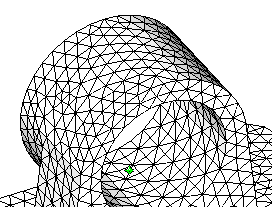
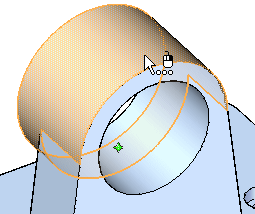
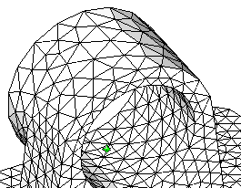

Activity: Size the mesh on a surface
For information about meshes, mesh quality, and how you can refine the mesh to improve results, see the following help topics:
-
Open the file FE_bearing_surf_size.par.
Simulation models are delivered in the \Program Files\Siemens\Solid Edge 2023\Training\Simulation folder.

-
Mesh the bearing:
-
Make sure Static Study 1 is the active study.
-
Choose Simulation tab→Mesh group→Mesh.
 Note:
Note:In the absence of loads and constraints, you cannot solve the study, but you can mesh the model.
-
In the Tetrahedral Mesh dialog box, click the Mesh button.
After a short period of time, the bearing displays with a tetrahedral mesh.

-
Rotate the part so you can view the rear, and zoom in on the main bore.

-
-
Change (refine) the surface sizing:
-
Observe the current mesh on the top of the bearing bore.
-
Choose Simulation tab→Mesh group→Surface Size.

-
Select the outer cylindrical surface of the bore.

-
In the Surface Size dialog box, type 10 in the Element size box and click Accept.

-
Mesh the part again; note the increase in the element size on the selected face.
Note:You can increase the size of the elements when lower accuracy is warranted on a face. This can result in faster processing.

-
-
Close this file.
How do I
Mesh the modelActivity: Use subjective mesh sizing
Activity: Apply a surface mesh to a sheet metal part
Activity: Size the mesh on an edge
Learn more
MeshesMesh sizing
Examining the mesh
Identifying areas of poor mesh quality
Look up more details
Mesh dialog boxMesh Options dialog box
Body Size dialog box
Edge Size dialog box
Surface Size dialog box
Check Element Quality